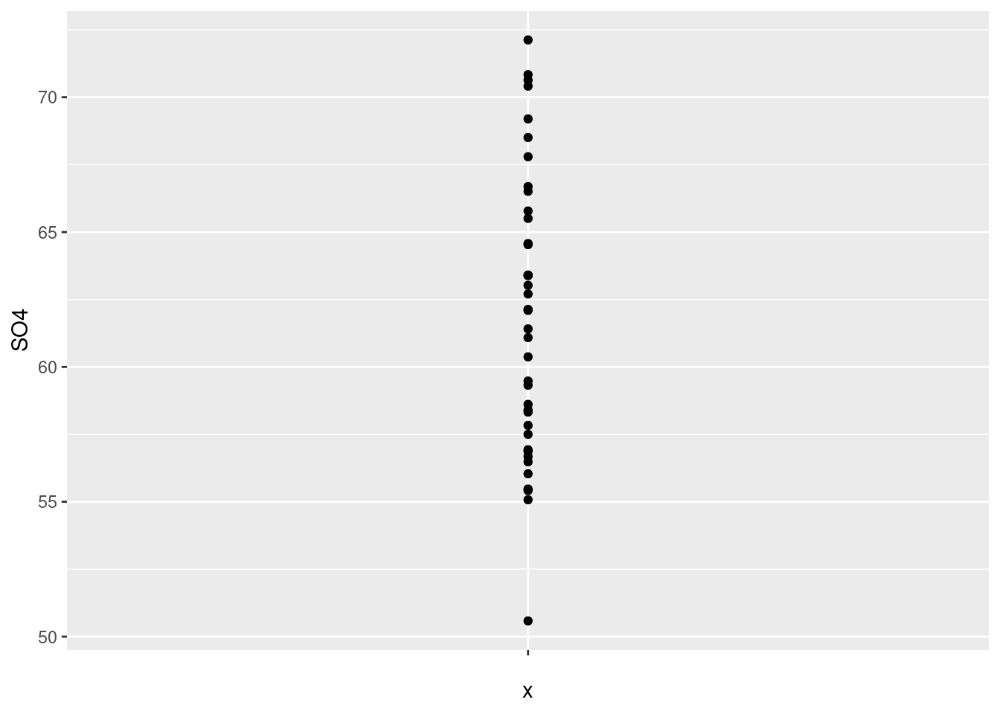
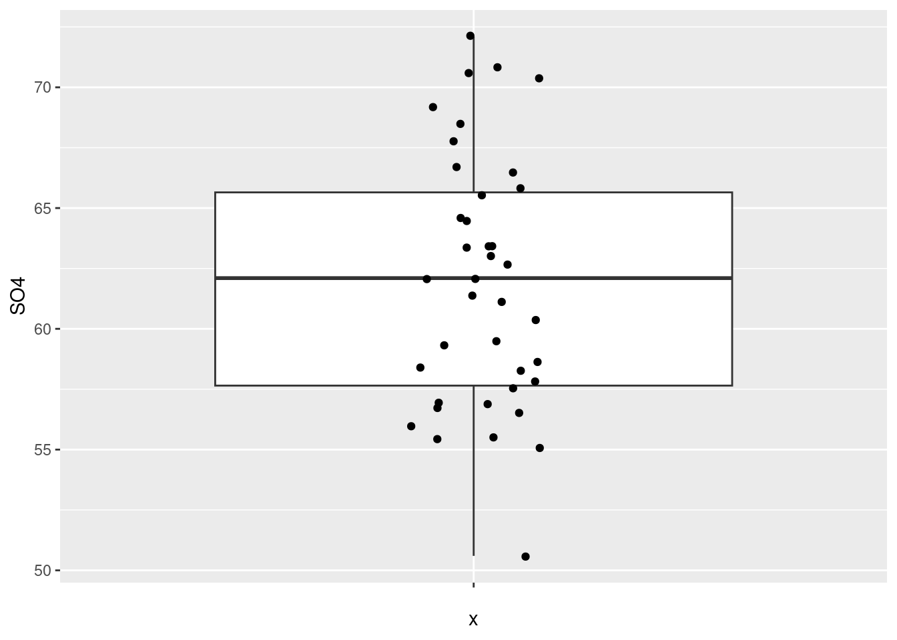
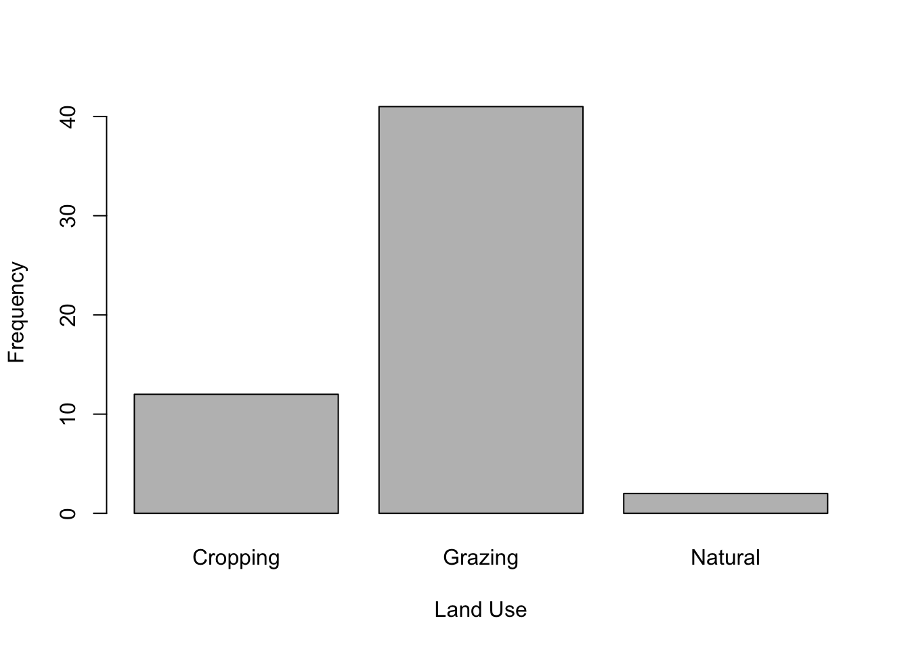
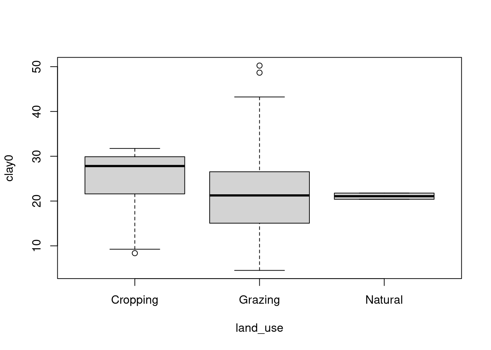
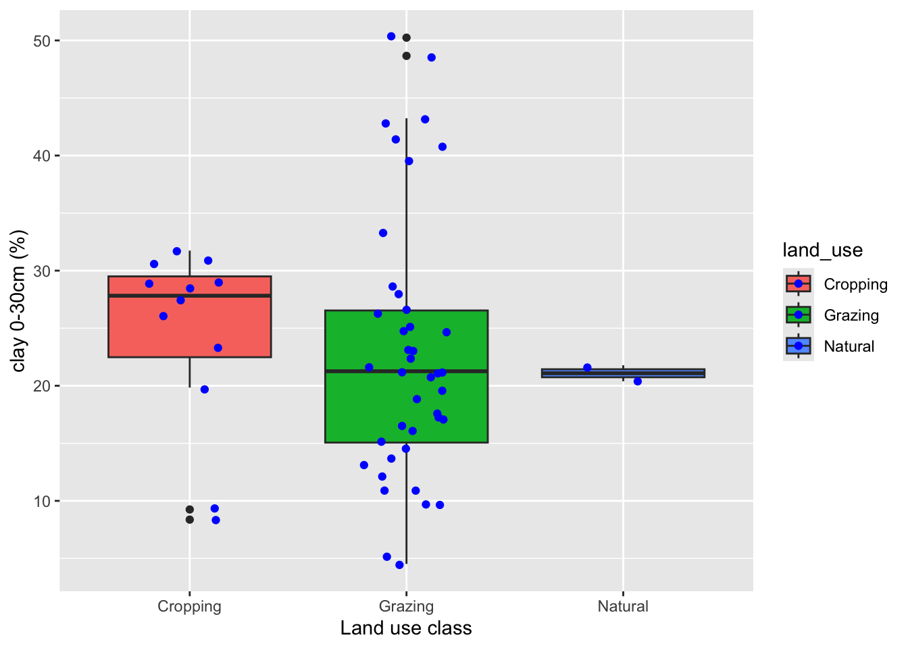

# install.packages(readxl)
library(readxl)
water<-read_excel("data/ENVX1002_Data2.xlsx", sheet = "SO4")Academic integrity
This exercise encourages students to discuss academic integrity, and in particular the grey areas often present. Your demonstrator will provide you with a number of scenarios to discuss with each other in smaller groups, and then with the class.
If you are interested in more information on Academic Integrity at the University of Sydney, see the following link: Academic Integrity. Also ensure you have completed the Academic Honesty Education Module (AHEM). This must be complete before your first assessment is due (next week for ENVX1002).
Tip
Learning Outcomes
At the end of this practical students should be able to:
- Use R to calculate simple summary statistics
- Create basic plots using default R and ggplot
- Develop your coding and Quarto skills
- Do basic data wrangling using dplyr
- Produce your own knitted Markdown document
Computer lab
We are going to be working through a series of tasks and also complete some exercises indicated by Exercise. The best way to do this is to create a project for this week in your ENVX1002 folder, open a Quarto document and work through the tasks and complete the exercises. Make sure you document your answers and make notes so that it will be easy to understand when you revisit the computer during your study for the mid-semester skills based assessment and final exam. You should have a good understanding of the code, the analysis, and what the meaning of the output is.
You can download the data file here
Github: ENVX1002_Data2.xlsx
Canvas: ENVX1002_Data2.xlsx
Setting up your project
The first step is to 1) create a new project folder for this weeks computer lab, 2) Move the data file ENVX1002_Data2.xlsx into to a folder called data in your project folder, 3) start a new Quarto Document.
Walk through exercise - Plotting the \(SO_4\) data
- We will start with further describing the \(\text{SO}_4\) water quality data
- Remember the most common way to enter data into R is to import it from an external file.
- Like in the tutorial, in this example we will import the data found in the worksheet called SO4 found in the ENVX1002_Data2.xlsx file that can be downloaded from the Tutorial and Computer Lab Page on Canvas.
- In R you can import the file as a data frame using the
read_excelfunction from the readxl package. Note that you need to specify which worksheet you want to import. If you have not installed the readxl package you will need to runinstall.packages("readxl")but you need to only run this once. Hence, I often suggest to simply type this in the console window bottom left in R Studio and run it from there or you can put a comment # in front after you have run the code once! Note that there are other commands, such asread.csvandread.table, that can be used to read in various files types!
Walk through Exercise - ggplot
In this case, the package called ggplot2 to make awesome looking plots, create 1) plot the raw data using a strip chart and 2) a jitter boxplot for the SO4 data set from the tutorial. For each graphical summary you have used, describe what you see and relate that to the data i.e. is it symmetrical, what are the range of values and also comment on the advantages and disadvantages of each plot for describing the SO4 data set?
- Strip chart
# install.packages(ggplot2)
library(ggplot2)
p <- ggplot(water, aes(y=SO4, x="")) +
geom_jitter(position=position_jitter(0))
p
- Boxplot with jittered points - the following is how to create a boxplot with the data points jittered
p <- ggplot(water, aes(y=SO4, x="")) +
geom_boxplot() +
geom_jitter(position=position_jitter(0.1))
p
Check out the cheat sheets here https://www.rstudio.com/resources/cheatsheets/ for more on making plots as well as manipulating data in R!
Walk through Exercise - skewness
In this case, the package called moments contains a function for calculating skew, called skewness. The skewness (\(g_1\)) of a data set gives an indication of its symmetry. The sign of the skewness tells us whether the data is positively or negatively skewed. It is useful as one source of evidence for determining whether the data has a symmetrical distribution, particularly when having to assess this for many variables at once. First we must install the package using the install.packages function and the load it using the library function. Note that I have put a comment # in front as I have already installed the package and you only need to install a package once!
#install.packages("moments")
library(moments)Now we can calculate the skewness of sulphate.
skewness(water$SO4)[1] 0.1571807Describing Soil
Given a data set, we need statistics and graphics to summarise it’s key features. The statistics and graphics we use depend on the type data, i.e. numerical or categorical. The example data set we will use is from the catchment of Muttama creek which is located near Canberra. Further details about the catchment are given in Orton et al. (2016). 56 sites were sampled for soil to a depth varying between 1 and 2 m and various soil and site properties were measured.
Reference: Orton TG, Pringle MJ & Bishop, TFA (2016). A one-step approach for modelling and mapping soil properties based on profile data sampled over varying depth intervals. Geoderma 262: 174-186.
In this work we will focus on describing a subset of soil properties:
clay0which is the clay (%) for the 0-30cm depth layer;clay60which is the clay (%) for the 60-90cm depth layer;ec0which is the electrical conductivity (EC) (\(\mu\)S/cm) for the 0-30cm depth layer;ec60which is the electrical conductivity (EC) (\(\mu\)S/cm) for the 60-90cm depth layer.
The clay content of a soil determines the nutrients and water it can hold, while EC is a measure of the salt in the soil which if too high limits plant growth. We wish to describe these data in terms of:
- typical values, their variability and identify unusual observations;
- differences between different depths;
- differences between the 2 soil properties; clay and EC.
We are also interested in describing the data set in terms of the lithology and land use found at each of the sites.
The data is in the worksheet called soil found in the ENVX1002_Data2.xlsx file that can be found in the Tutorial and Computer lab page in Canvas. Download the file and save into your data folder in your project folder and then load the data set into R. Remember you need to have installed and loaded the readxl package to do this which we did earlier
Categorical data
A common way to describe categorical data is to create a frequency table which presents the number of observations belonging to each class.
table(soil$land_use)
Cropping Grazing Natural
12 41 2 From this we can see the dominant (most commonly sampled) land use is Grazing.
A common graphic used to summarise categorical data is a bar plot which can be created with the plot function. Note that we use the as.factor command to make sure r knows to do a bar plot.
plot(as.factor(soil$land_use),xlab="Land Use",ylab="Frequency")
Exercise 1
Lithology
What is the most commonly sampled lithology?
Hint: use the table function to find out the frequency of each lithology. You could also create a bar plot of the lithology data (see land-use example above).
Numerical data
In this case we have 4 properties of interest, clay and EC at 2 different depths. Rather than calculating statistics on each variable separately you can in some cases apply the function to multiple columns in a data frame. In our case the columns of interest are the 2nd to 5th in the soil data frame and we can apply the summary function to all at once.
summary(soil[,2:5]) clay0 clay60 ec0 ec60
Min. : 4.52 Min. :10.38 Min. : 13.24 Min. : 15.86
1st Qu.:16.29 1st Qu.:30.95 1st Qu.: 45.72 1st Qu.: 28.66
Median :21.78 Median :46.91 Median : 65.96 Median : 39.17
Mean :23.20 Mean :46.64 Mean : 70.56 Mean : 60.51
3rd Qu.:28.46 3rd Qu.:61.46 3rd Qu.: 88.97 3rd Qu.: 59.92
Max. :50.24 Max. :78.73 Max. :176.58 Max. :446.72
NA's :1 NA's :1 Exercise 2
For each of the clay and EC properties (at all depths),
- Give the most appropriate estimate of centre.
- Is the data symmetrical?
- Are there any unusual observations? Justify your answers.
Hint: use the summary values from above, use the skewness function from the moments package and also use hist and boxplot function to look for unusual observations and skewness.
Exercise 3
Is clay content more variable in the 0-30cm layer or in the 30-60cm layer? For the 0-30cm layer is clay or EC the most variable property. Justify your answers.
Hint: you may calculate the sd and/or var and/or IQR and/or the coefficient of variation (CV) for each property.
Comparing between groups.
Of interest to researchers is to assess the differences in a variable between groupings of data, e.g. weight change for different diets. In this analysis we wish to describe the difference in clay and EC between the land use or lithology classes. This will lead to more formal hypothesis testing in the later topics in ENVX1002. See https://en.wikipedia.org/wiki/Lithology for more information on Lithiology.
This is where the tapply function is useful. Note we can use the $ followed by the column name to select the column as opposed to
tapply(soil$clay0,soil$land_use,mean)Cropping Grazing Natural
24.46667 22.92976 21.08500 The general structure of the tapply function is 3 arguments which are described below based on the code above:
- the response variable on which we wish to apply the function, clay 0,
soil$clay0; - the categorical variable which indicates the groups we wish to separately apply the function to, land use,
soil$land_use; - the function we are using,
mean.
We can use the tapply function for other statistics, for example the variance of each group is also important.
tapply(soil$clay0,soil$land_use,var) Cropping Grazing Natural
64.56181 132.23743 0.96605 Using dplyr
This is a little more fancy! We can also use a package called dplyr to apply functions to different groupings of data. See https://rstudio.com/wp-content/uploads/2015/02/data-wrangling-cheatsheet.pdf for all the operations you can do. Note you will have to install the dplyr package first and then load it into R Studio.
library(dplyr)
Attaching package: 'dplyr'The following objects are masked from 'package:stats':
filter, lagThe following objects are masked from 'package:base':
intersect, setdiff, setequal, unionsoil %>%
group_by(land_use) %>%
summarise(mean_clay0 = mean(clay0))# A tibble: 3 × 2
land_use mean_clay0
<chr> <dbl>
1 Cropping 24.5
2 Grazing 22.9
3 Natural 21.1Boxplot for different groupings
We can also generate graphics for properties for different groupings. In the example below we create boxplots for each land use class. Take note of the general structure of the arguments for the boxplot function in this case as they used for many functions in R.
First we specify the response, clay0, next is the tilde, ~ which means a funcion of, then we have the predictor, land_use, and finally we specify the data.frame with the data= argument. Using the data= argument enables us to specify column names only rather than their location within the data frame, e.g. soil[,2], soil$clay0.
boxplot(clay0~land_use,data=soil)
We can also use a package called ggplot2 to create awesome looking graphs. See https://ggplot2.tidyverse.org/ for all the graphics you can do. Note you will have to install the ggplot2 package first and then load it into R Studio.
library(ggplot2)
p_spoil <- ggplot(soil, aes(y = clay0, x = land_use, fill = land_use))
p_spoil +
geom_boxplot() +
geom_jitter(width=0.2, height = 0.2, col = "blue") +
ylab("clay 0-30cm (%)") +
xlab("Land use class")
Exercise 4
Using an appropriate measure of centre, which land use has the largest EC and clay content for each depth layer?
Exercise 5
Create boxplots of clay 0-30cm and clay 30-60cm for the different lithological classes. Are there any differences between the lithological classes based on the boxplots.
This is the end of the R component of the practical. Remember to save your files so you can access in the future.